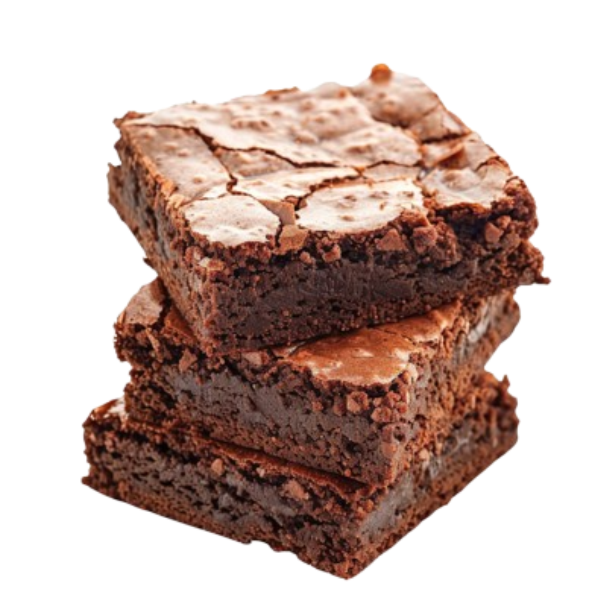

Chocolate Muffin Recipe

5 STAR Michelin
1.2M subscribers
635 078 views
5 days ago
Learn how to make the most delicious chocolate muffins in just 20 minutes! This recipe includes step-by-step instructions, tips for perfect texture, and ideas for delicious toppings. Enjoy baking with us!
Ingredients 👇
- 3/4 cup cooking oil or melted butter
- 3/4 or 1 cups sugar
- 1 1/2 tsp vanilla extract
- 3 eggs
- 3/4 cup flour
- 1/3 cup + 2 1/2 tbsp cocoa
- 1/2 tsp baking powder
- 1/4 tsp salt
INSTRUCTIONS
- 1. Preheat oven to 350 degrees. Grease a 8×8 square baking pan, or line it with parchment paper.
- 2. Mix together the oil, sugar and vanilla extract.
- 3. Add eggs and mix until well combined.
- 4. Combine flour, cocoa, baking powder and salt.
- 5. Slowly add to the egg mixture until well combined.
- 6. Pour the batter into the pan and spread evenly.
- 7. Bake for 25-30 minutes, or until a toothpick comes out with a few crumbs.
All rights reserved to Cooking With Rila
Original video here
Used for educational purposes only.

Ingredients
- 3/4 cup cooking oil or melted butter
- 3/4 or 1 cups sugar
- 1 1/2 tsp vanilla extract
- 3 eggs
- 3/4 cup flour
- 1/3 cup + 2 1/2 tbsp cocoa
- 1/2 tsp baking powder
- 1/4 tsp salt